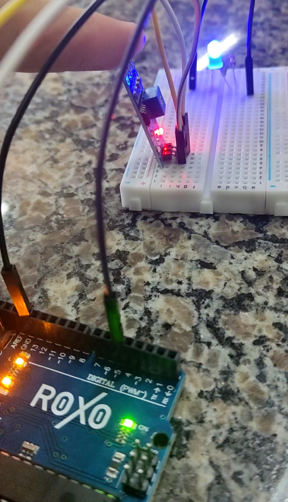

Nesse projeto vimos a utilização da Barra Gráfica de LEDs 10 Segmentos display utilizado para realizar sinalizações e mostrar algum tipo de variável através da intensidade luminosa apresentada na barra.
Nesse projeto vimos como funciona o sensor de luminosidade que pode ser utilizado para acender as luzes em ambientes onde a intensidade de luz diminui.

Nesse projeto vimos o LED RGB, um componente que permite a emissão de um espectro mais amplo de cores, com aplicações variadas.